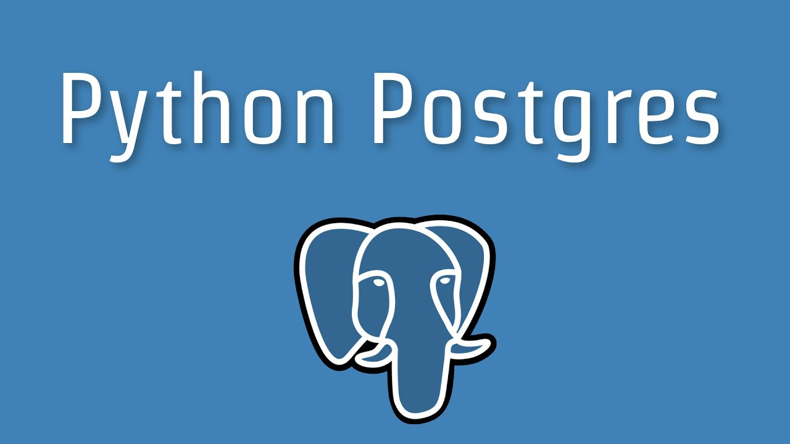

Connect to postgres database using python

First run this in terminal:
pip install psycopg2Create a new database
Log in to the PostgreSQL database server and create a database.
Create database mlteam
CREATE DATABASE mlteam;Connect to the database using the psycopg2
To connect to mlteam database, use the connect() function of the psycopg2.
The connect() function creates a new database session and returns a new instance of the connection class. By using the connection object, you can create a new cursor to execute any SQL statements.
To call the connect() function, you specify the PostgreSQL database parameters as a connection string and pass it like this to the connect function:
conn = psycopg2.connect(
host="localhost",
database="suppliers",
user="postgres",
password="Abcd1234"
)List of the connection parameters:
- database: the name of the database e.g mlteam.
- user: the username used to authenticate.
- password: password used to authenticate.
- host: database server address e.g., localhost or an IP address.
- port: the port number that defaults to 5432/5433 if it is not provided.
I highly recommend you to use a configuration file to store all connection parameters.
Contents of the mlteam.ini file:
[postgresql]
host=localhost
database=mlteam
user=postgres
password=verysecure@$passwordBy using the mlteam.ini, you can change the PostgreSQL connection parameters when you move the code to the production environment without modifying the code.
If you’re pushing code with git, include mlteam.ini to the .gitignore file to not committing the sensitive information to the public repo like github.
The .gitignore file will be like this:
mlteam.iniCreate the config.py file.
The following config() function read the mlteam.ini file and returns connection parameters. The config() function is placed in the config.py file:
It looks this way:
#!/usr/bin/python
from configparser import ConfigParser
def config(filename='mlteam.ini', section='postgresql'):
# create a parser
parser = ConfigParser()
# read config file
parser.read(filename)
# get section, default to postgresql
db = {}
if parser.has_section(section):
params = parser.items(section)
for param in params:
db[param[0]] = param[1]
else:
raise Exception('Section {0} not found in the {1} file'.format(section, filename))
return dbCreate connect.py file
The following connect() function connects to mlteam , prints out database version.
connect.py file:
#!/usr/bin/python
import psycopg2
from config import config
def connect():
""" Connect to the PostgreSQL database server """
conn = None
try:
# read connection parameters
params = config()
# connect to the PostgreSQL server
print('Connecting to the PostgreSQL database...')
conn = psycopg2.connect(`params)
# create a cursor
cur = conn.cursor()
# execute a statement
print('PostgreSQL database version:')
cur.execute('SELECT version()')
# display the PostgreSQL database server version
db_version = cur.fetchone()
print(db_version)
# close the communication with the PostgreSQL
cur.close()
except (Exception, psycopg2.DatabaseError) as error:
print(error)
finally:
if conn is not None:
conn.close()
print('Database connection closed.')
if __name__ == '__main__':
connect()The process in code.
First, it reads database connection parameters from the mlteam.ini file then creates a new database connection by calling the connect() function, it then creates a new cursor and execute an SQL statement to get database version. After that, read the result set by calling the fetchone() method of the cursor object. Finally, close the communication with the database server by calling the close() method of the cursor and connection object.
Execute code by running the connect.py file.
You should see such result in terminal:
Connecting to the PostgreSQL database...
PostgreSQL database version:
('PostgreSQL 13, compiled by Visual C++ build 1914, 64-bit',)
Database connection closed.